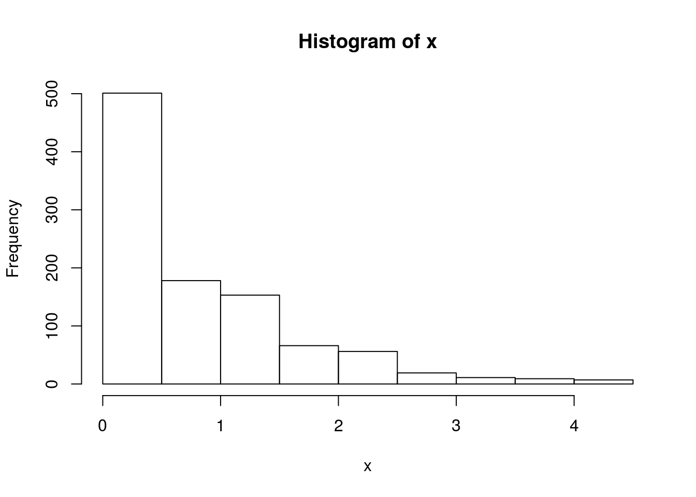
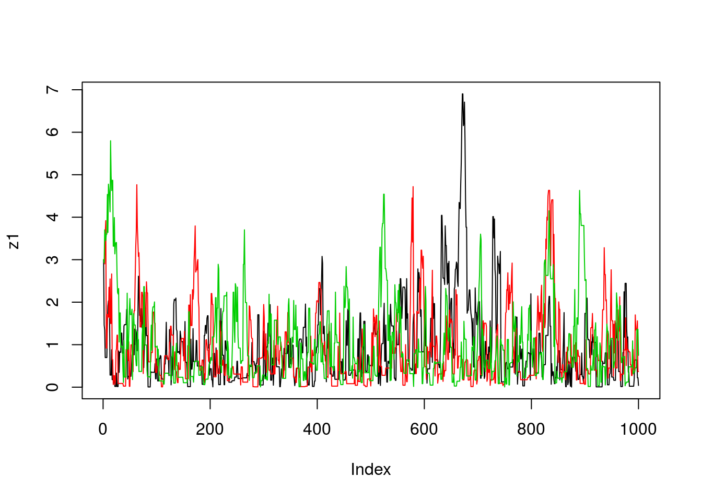
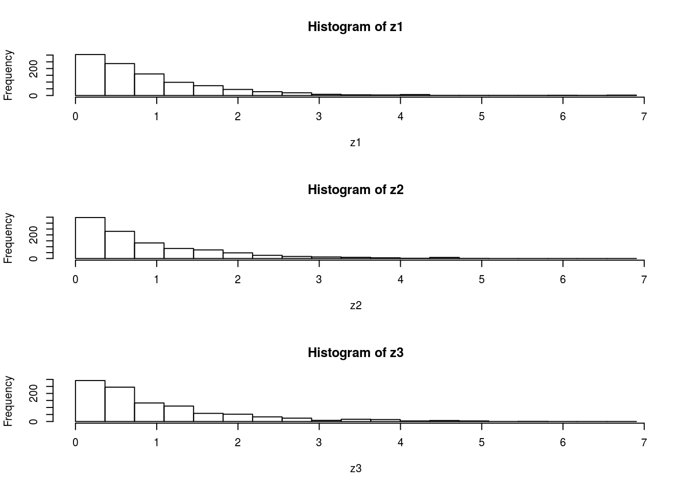
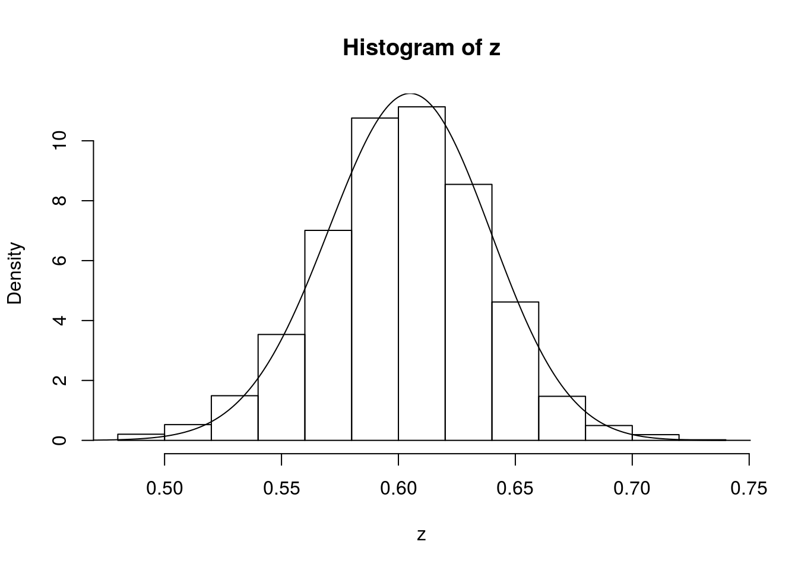
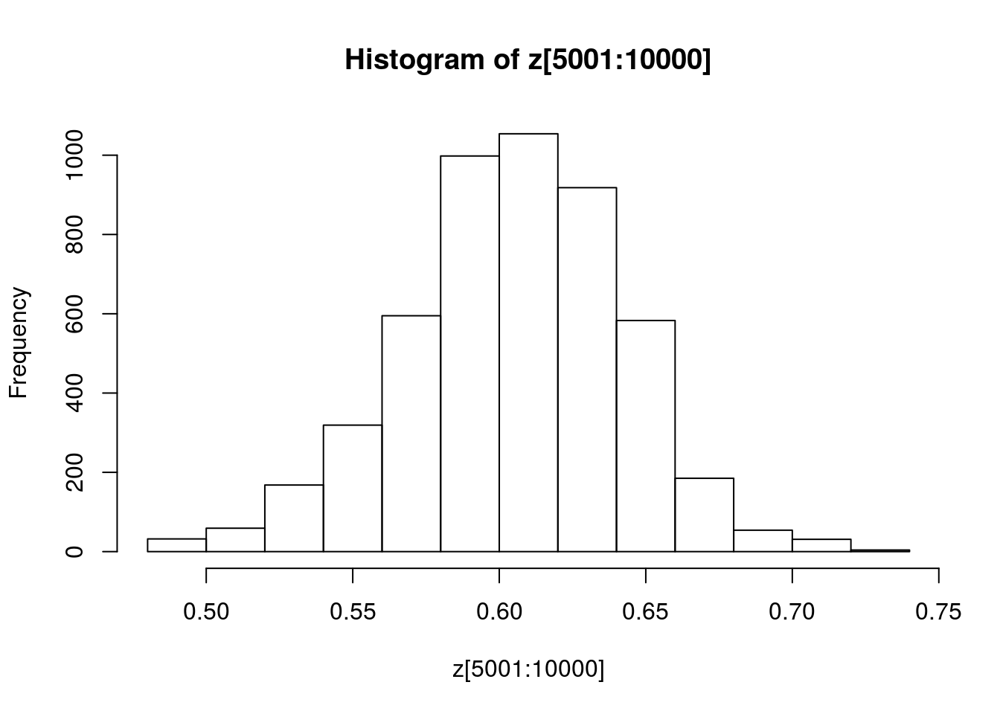

Simple Examples of Metropolis–Hastings Algorithm
Matthew Stephens
2017-01-24
Last updated: 2017-01-25
Code version: ea1f50e
Pre-requisites
Caveat on code
Note: the code here is designed to be readable by a beginner, rather than “efficient”. The idea is that you can use this code to learn about the basics of MCMC, but not as a model for how to program well in R!
Example 1: sampling from an exponential distribution using MCMC
Any MCMC scheme aims to produce (dependent) samples from a ``target" distribution. In this case we are going to use the exponential distribution with mean 1 as our target distribution. So we start by defining our target density:
target = function(x){
if(x<0){
return(0)}
else {
return( exp(-x))
}
}Having defined the function, we can now use it to compute a couple of values (just to illustrate the idea of a function):
target(1)[1] 0.3678794target(-1)[1] 0Next, we will program a Metropolis–Hastings scheme to sample from a distribution proportional to the target
x = rep(0,1000)
x[1] = 3 #this is just a starting value, which I've set arbitrarily to 3
for(i in 2:1000){
currentx = x[i-1]
proposedx = currentx + rnorm(1,mean=0,sd=1)
A = target(proposedx)/target(currentx)
if(runif(1)<A){
x[i] = proposedx # accept move with probabily min(1,A)
} else {
x[i] = currentx # otherwise "reject" move, and stay where we are
}
}Note that x is a realisation of a Markov Chain. We can make a few plots of x:
plot(x) 
hist(x)
We can wrap this up in a function to make things a bit neater, and make it easy to try changing starting values and proposal distributions
easyMCMC = function(niter, startval, proposalsd){
x = rep(0,niter)
x[1] = startval
for(i in 2:niter){
currentx = x[i-1]
proposedx = rnorm(1,mean=currentx,sd=proposalsd)
A = target(proposedx)/target(currentx)
if(runif(1)<A){
x[i] = proposedx # accept move with probabily min(1,A)
} else {
x[i] = currentx # otherwise "reject" move, and stay where we are
}
}
return(x)
}Now we’ll run the MCMC scheme 3 times, and look to see how similar the results are:
z1=easyMCMC(1000,3,1)
z2=easyMCMC(1000,3,1)
z3=easyMCMC(1000,3,1)
plot(z1,type="l")
lines(z2,col=2)
lines(z3,col=3)
par(mfcol=c(3,1)) #rather odd command tells R to put 3 graphs on a single page
maxz=max(c(z1,z2,z3))
hist(z1,breaks=seq(0,maxz,length=20))
hist(z2,breaks=seq(0,maxz,length=20))
hist(z3,breaks=seq(0,maxz,length=20))
Exercise
Use the function easyMCMC to explore the following:
- how do different starting values affect the MCMC scheme?
- what is the effect of having a bigger/smaller proposal standard deviation?
- try changing the target function to the following
target = function(x){
return((x>0 & x <1) + (x>2 & x<3))
}What does this target look like? What happens if the proposal sd is too small here? (try eg 1 and 0.1)
Example 2: Estimating an allele frequency
A standard assumption when modelling genotypes of bi-allelic loci (eg loci with alleles \(A\) and \(a\)) is that the population is “randomly mating”. From this assumption it follows that the population will be in “Hardy Weinberg Equilibrium” (HWE), which means that if \(p\) is the frequency of the allele \(A\) then the genotypes \(AA\), \(Aa\) and \(aa\) will have frequencies \(p^2, 2p(1-p)\) and \((1-p)^2\) respectively.
A simple prior for \(p\) is to assume it is uniform on \([0,1]\). Suppose that we sample \(n\) individuals, and observe \(n_{AA}\) with genotype \(AA\), \(n_{Aa}\) with genotype \(Aa\) and \(n_{aa}\) with genotype \(aa\).
The following R code gives a short MCMC routine to sample from the posterior distribution of \(p\). Try to go through the code to see how it works.
prior = function(p){
if((p<0) || (p>1)){ # || here means "or"
return(0)}
else{
return(1)}
}
likelihood = function(p, nAA, nAa, naa){
return(p^(2*nAA) * (2*p*(1-p))^nAa * (1-p)^(2*naa))
}
psampler = function(nAA, nAa, naa, niter, pstartval, pproposalsd){
p = rep(0,niter)
p[1] = pstartval
for(i in 2:niter){
currentp = p[i-1]
newp = currentp + rnorm(1,0,pproposalsd)
A = prior(newp)*likelihood(newp,nAA,nAa,naa)/(prior(currentp) * likelihood(currentp,nAA,nAa,naa))
if(runif(1)<A){
p[i] = newp # accept move with probabily min(1,A)
} else {
p[i] = currentp # otherwise "reject" move, and stay where we are
}
}
return(p)
}Running this sample for \(n_{AA}\) = 50, \(n_{Aa}\) = 21, \(n_{aa}\)=29.
z=psampler(50,21,29,10000,0.5,0.01)Now some R code to compare the sample from the posterior with the theoretical posterior (which in this case is available analytically; since we observed 121 \(A\)s, and 79 \(a\)s, out of 200, the posterior for \(p\) is Beta(121+1,79+1).
x=seq(0,1,length=1000)
hist(z,prob=T)
lines(x,dbeta(x,122, 80)) # overlays beta density on histogram
You might also like to discard the first 5000 z’s as “burnin”. Here’s one way in R to select only the last 5000 zs
hist(z[5001:10000])
Exercise
Investigate how the starting point and proposal standard deviation affect the convergence of the algorithm.
Example 3: Estimating an allele frequency and inbreeding coefficient
A slightly more complex alternative than HWE is to assume that there is a tendency for people to mate with others who are slightly more closely-related than “random” (as might happen in a geographically-structured population, for example). This will result in an excess of homozygotes compared with HWE. A simple way to capture this is to introduce an extra parameter, the “inbreeding coefficient” \(f\), and assume that the genotypes \(AA\), \(Aa\) and \(aa\) have frequencies \(fp + (1-f)p*p, (1-f) 2p(1-p)\), and \(f(1-p) + (1-f)(1-p)(1-p)\).
In most cases it would be natural to treat \(f\) as a feature of the population, and therefore assume \(f\) is constant across loci. For simplicity we will consider just a single locus.
Note that both \(f\) and \(p\) are constrained to lie between 0 and 1 (inclusive). A simple prior for each of these two parameters is to assume that they are independent, uniform on \([0,1]\). Suppose that we sample \(n\) individuals, and observe \(n_{AA}\) with genotype \(AA\), \(n_{Aa}\) with genotype \(Aa\) and \(n_{aa}\) with genotype \(aa\).
Exercise:
- Write a short MCMC routine to sample from the joint distribution of \(f\) and \(p\).
Hint: here is a start; you’ll need to fill in the …
fpsampler = function(nAA, nAa, naa, niter, fstartval, pstartval, fproposalsd, pproposalsd){
f = rep(0,niter)
p = rep(0,niter)
f[1] = fstartval
p[1] = pstartval
for(i in 2:niter){
currentf = f[i-1]
currentp = p[i-1]
newf = currentf + ...
newp = currentp + ...
...
}
return(list(f=f,p=p)) # return a "list" with two elements named f and p
}- Use this sample to obtain point estimates for \(f\) and \(p\) (e.g. using posterior means) and interval estimates for both \(f\) and \(p\) (e.g. 90% posterior credible intervals), when the data are \(n_{AA} = 50, n_{Aa} = 21, n_{aa}=29\).
Addendum: Gibbs Sampling
You could also tackle this problem with a Gibbs Sampler (see vignettes here and here).
To do so you will want to use the following “latent variable” representation of the model: \[z_i \sim Bernoulli(f)\] \[p(g_i=AA | z_i=1) = p; p(g_i=AA | z_i=0) = p^2\] \[p(g_i=Aa | z_i = 1)= 0; p(g_i=Aa | z_i=0) = 2p(1-p)\] \[p(g_i=aa | z_i = 1) = (1-p); p(g_i =aa | z_i=0) = (1-p)^2\]
Summing over \(z_i\) gives the same model as above: \[p(g_i=AA) = fp + (1-f)p^2\]
Exercise:
Unsing the above, implement a Gibbs Sampler to sample from the joint distribution of \(z,f,\) and \(p\) given genotype data \(g\).
Hint: this requires iterating the following steps
- sample \(z\) from \(p(z | g, f, p)\)
- sample \(f,p\) from \(p(f, p | g, z)\)
Session Information
sessionInfo()R version 3.3.2 (2016-10-31)
Platform: x86_64-apple-darwin13.4.0 (64-bit)
Running under: OS X El Capitan 10.11.6
locale:
[1] en_US.UTF-8/en_US.UTF-8/en_US.UTF-8/C/en_US.UTF-8/en_US.UTF-8
attached base packages:
[1] stats graphics grDevices utils datasets methods base
loaded via a namespace (and not attached):
[1] backports_1.0.5 magrittr_1.5 rprojroot_1.2 tools_3.3.2
[5] htmltools_0.3.5 yaml_2.1.14 Rcpp_0.12.8 stringi_1.1.2
[9] rmarkdown_1.3 knitr_1.15.1 git2r_0.18.0 stringr_1.1.0
[13] digest_0.6.10 workflowr_0.3.0 evaluate_0.10 This site was created with R Markdown